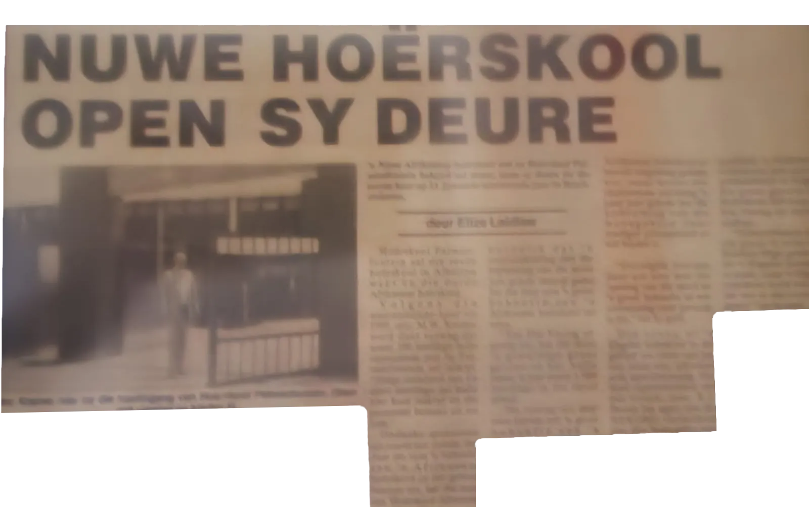
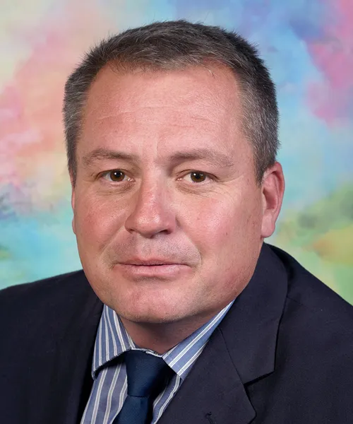

Ons Geskiedenis
Van twee skole na een: die verhaal van Hoërskool Dinamika sedert 1993.
Tydlyn
Ons verhaal
- 1993
In 1993 het Hoërskool Palmietfontein en Hoërskool Die Varing besluit om die proses van samesmelting te begin. Daar is besluit dat Hoërskool Die Varing se gebou as die nuwe skoolgebou sou dien. Die nuwe skool het sy deure aan die begin van die vierde kwartaal, op 6 Oktober 1993, met amper 900 leerders geopen. Mnr. André Bouwer was die eerste waarnemende hoof van Hoërskool Dinamika.
- 1994
Mnr. Dieter Böhmer is aangestel as die eerste permanente hoof van Hoërskool Dinamika. Mnr. Böhmer was baie ingestel op akademie, Christelike waardes en dissipline.
- 2008
Mnr. Vollaard is aangestel as Hoërskool Dinamika se tweede hoof. Mnr. Vollaard was ’n mensemens wat vir sy personeel en leerders omgegee het, en hy het ’n groot liefde vir sport gehad.
- 2016
Mnr. Johan Schutte word as waarnemende hoof aangestel. Sy eerste groot verandering is om Dinamika ’n parallelmedium-skool te maak — in lyn met die skool se missie — sodat die skool meer toeganklik is vir leerders in Alberton.
- 2017
Mnr. Schutte word bevorder tot permanente hoof. Van sy aanstelling af is hy ingestel op die skool se infrastruktuur: hy het projektors in elke klaskamer laat installeer en spesialis-onderwysers en sportafrigters aangestel. Hy glo daaraan om personeel en leerders geleenthede vir groei in akademie, sport, leierskap en kultuur te gee, en dat elke leerder sy of haar plek in die samelewing moet kan volstaan. Daarom het hy die skool op vier pilare begin bestuur: akademie, dissipline, holistiese ontwikkeling en Christelike waardes.
- 2022
Die skoollied is herskryf in Hoërskool Dinamika se twee tale van onderrig. Die V-blok is gebou om plek te maak vir die stygende getal leerders: vyf ekstra klaskamers en een werkswinkel is aangebou.
- 2023
Dinamika het die eerste fase aangepak om teen beurtkrag te werk: die skool het ’n 80 kVA-kragopwekker aangekoop, sodat elke klas tydens beurtkrag ten volle elektrisiteit het. ’n Energiekomitee is aangestel om fase 2 — sonkrag en batterye — te beplan. Fase 1 van die boorgatprojek is ook voltooi: die boorgat is geboor en ons het water. Fase 2 sluit die installering van die pomp en watertenks in.
Leierskap
Ons hoofde

Uit die argief
Koerantberigte
Berigte oor Hoërskool Palmietfontein en die opening van die nuwe hoërskool. Klik op ’n berig om dit te vergroot.
-
Koerantberig oor Hoërskool Palmietfontein
-
“Nuwe hoërskool open sy deure”